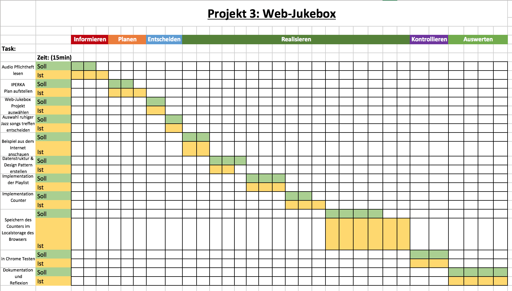

Projekt 3: Web-Jukebox
Begründung der Auswahl:
Dieses Projekt ist für mich Neuland, ich habe mich noch nie mit dem Thema Integration von Audio-Inhalten auf Webseiten beschäftigt. Da ich an meinem derzeitigen Arbeitsort schon an mehreren Frontend-Webapplikation mitgearbeitet habe und bis jetzt noch nicht darauf gestossen bin, denke ich das dies auch nicht etwas Alltägliches ist, sondern meist bloss von grossen Unternehmen wie Apple, Spotify, Souncloud etc. praktiziert wird.
Dennoch bin ich sehr gespannt, wie viel Aufwand dahinter eigentlich steckt.
Bezug zur Theorie:
In diesem Projekt habe ich äusserst viel mit CSS hantiert. Ich habe viel Wert auf das Design dieser Jukebox gelegt und versucht sie mit viel kreativer Fantasie zu einer „wahrhaften JAZZ-Jukebox“ zu gestalten.
Natürlich habe ich auch einiges mit Javascript bzw JQuery programmiert, wie zum Beispiel die Playlist oder den Spielanzahlzähler. Ausserdem habe ich die Daten so abgelegt, dass sie auch bei einem einfachen „refresh“ nicht verloren gehen.
Da ich selbst nicht sehr musikalisch veranlagt bin habe ich Sample Jazzmusikstücke verwendet, die kommerziell benutzt werden dürfen solange mit Ihnen kein Geld gemacht wird. Im Bezug zur Theorie habe ich mir die Kompression der Stücke angeschaut und MPEG-1 Audio Layer III, auch MP3; verwendet.
Reflexion:
Was habe ich gelernt?
In diesem Projekt habe ich mich speziell mit dem Localstorage des Browsers befasst, der hier den Spielanzahlzähl speichert. Dabei ist mir aufgefallen, das sich dieser nicht so einfach wieder löschen lässt und manuell entfernt werden muss.
Das Key und Value Prinzip war mir bereits bekannt, daher hat mir dies nicht all zu viele Problem bereitet.
Welche Folgerungen für das Fach kann ich ziehen?
Mein ursprünglicher Gedanke, das dies nur etwas für grosse Unternehmen ist falsch. Ich habe im Verlauf der Programmierung der Jukebox gemerkt, dass es viele kleine Unternehmen, sowie auch selbständige Leute gibt für die Integration von Audio ein wichtiger Bestandteil ist. Zum Beispiel bin ich auf einen Webauftritt eines Lokalen Musikers gestossen, der ein „Soundportfolio“ von seinem Orchester hat...
Wie bin ich vorgegangen?
Zu erst habe ich das Audio-Pflichtenheft gelesen und anschliessend einen Zeitplan aufgestellt. Dabei habe ich mich dann auch gleich für ein Projekt entschieden. Dann habe ich noch einige Free-Jazz-Tracks aus dem Internet besorgt.
Folgend ging es dann an die Realisierung des Projekts, dabei habe ich einige Beispiele im Internet angeschaut un dann mit der Implementation der Web-Applikation begonnen. Am Ende habe ich es dann noch kurz im Chrome getestet. Zum Schluss habe ich dann die Dokumentation und Reflexion geschrieben.
Welche Methoden habe ich gewählt?
Ich bin nach der 6-Schritte Methode, IPERKA, vorgegangen.
Dabei handelt es sich um sechs Phasen:

Was hat mir gefallen, was nicht?
Generell fand ich es gut, wieder in einem neuen Bereich gearbeitet zu haben. Ich habe mich mit der richtigen Initialisierung von Audio Dateien beschäftigt und versucht ein klares Design Pattern zu schaffen. Ausserdem war es mit Abstand das bisher anspruchsvollste Projekt.
Was half mir beim lernen, was nicht?
Beim lernen haben mir vor allem die online Beispiele geholfen.
Was gelang mir gut?
Ich bin mit dem Ergebnis eigentlich sehr zufrieden, es hat alle Ziele des Pflichtauftrags erfüllt und sieht sehr gut aus.
Was kann ich jetzt gut oder besser?
Ich denke ich habe mich wieder im Bereich CSS verbessert und auch meine Code-Qualität ist gestiegen.
Wo hatte ich Schwierigkeiten?
Ich hatte im eigentlichen Sinn keine grossen Schwierigkeiten, jedoch hat dieses Projekt sehr viel Zeit in Anspruch genommen.
Woran will ich das nächste Mal denken?
Ich werde versuchen von Anfang an ein Design Pattern zu benutzen und den Code dem entsprechen in Files zu unterteilen.